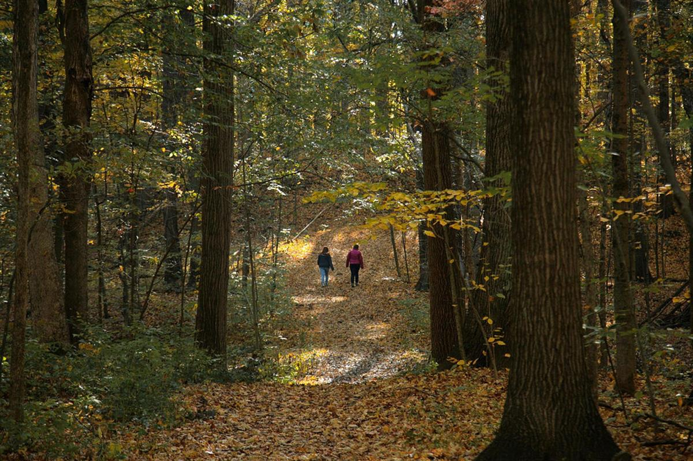
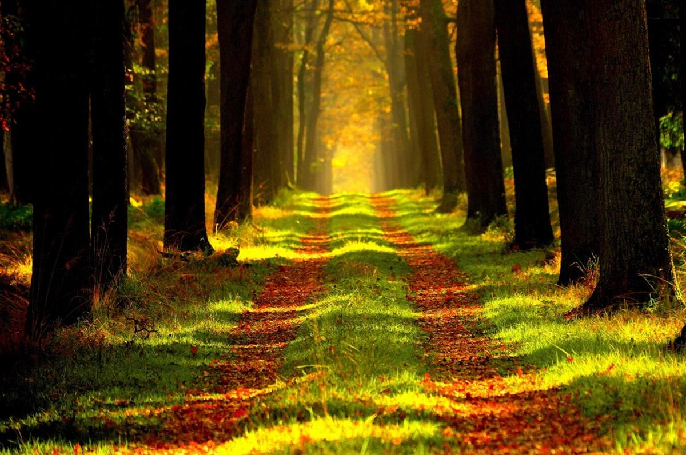
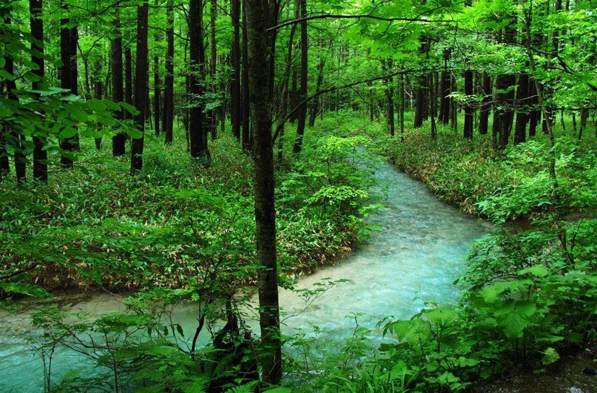
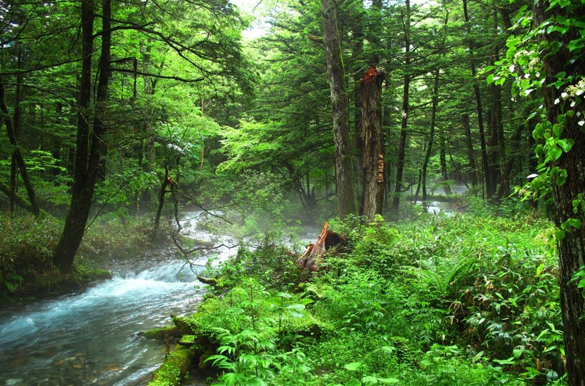

Photo: Moyan Brenn via Flickr
Eric CaffreyMay 3, 2017
There’s wonderful phrase in Japanese language for spending time in nature and in the company of trees – Shinrin Yoku or forest bathing. These two gorgeous words conjure up imagery of soothing, healing walks in the wild – the idea of feeling the stress leave your body to enter a more Zen space is nature therapy at its most magical.Forest bathing is becoming a new global phenomenon in an effort to soak up the benefits of taking in the forest atmosphere which has been linked to promoting physiological and psychological health benefits. We have gradually become an indoor species and in a 2001, a survey by the US Environmental Protection Agency concluded 87 per cent of Americans spent most of their time indoors and 6 per cent in a vehicle.With the explosion of forest bathing, scientific studies have revealed benefits of nature therapy like improved memory and lower stress levels. Due to its natural healing prowess, the US has started to practice forest bathing. But many different cultures have been practising this method of ecotherapy for years but participate forest bathing in keeping with their own traditions and customs.
Shinrin Yoku
Shinrin Yoku means “forest bathing” or “taking in the forest atmosphere.” In 1982, the Forest Agency proposed Shrinrin Yoku as a different type of therapy which quickly took as picnicking under the cherry blossoms in April and March is a country wide pastime. Shinrin Yoku Forest Therapy combines leisurely walks underneath a forest canopy and focused meditation on capturing a deep connection with nature for mentoring.
The Center for Environment, Health and Field Sciences in Japan concluded that forest environments lower concentrations of cortisol, reduce blood pressure and sympathetic nerve activity compared to city environments.
Additionally, forest bathing significantly reduces hostility and depression. Chichibu-Tama-Kai is an ideal place to put practice Shinrin Yoku as the mountainous landscape has the largest concentration of evergreen trees there.

Photo: Steven Depolo
Friluftsliv
Friluftsliv is a Norwegian word that originated in 1859 and exemplifies Norway’s cultural connection with nature. In fact, it may play a part in Norwegian’s overall happiness as Norway is the second happiest country in the world according to UN rankings. Friluftsliv translates to English as”free air life.” The term is associated with a way to describe a lifestyle of exploring and appreciating nature.

Photo: ersi via Pixabay
Many Norwegian high schools have a course named Friluftsliv incorporated in their school curriculum. The basic principle of Friluftsliv in the education is simple. By allowing children to play outdoors, similar to recess, forest bathing can be an elixir for kids who struggle to focus.
There is some flexibility in friluftsliv, but the consensus is that delving into nature shouldn’t be complicated. A great place to discover friluftsliv in Norway for yourself is Marka which is a vast untouched area that surrounds Orlso.

Photo: cosmospaceternal_8734 via Pixabay
Sēnlínyù
Sēnlínyù is Mandarin for “tree bathing.” Very similar to the Shinrin Yoku, the Chinese believe that a simple 40-minute brisk walk through a green canopy landscape can help subsided and reduced the infamous hormone cortisol, the stress-inducing hormone. Many trees release phytoncides which can increase the human body’s autoimmune response to infection or sickness.

Photo: cosmospaceternal_8734 via Pixabay
Additionally, the tree chemical has been proven to improve insomnia, boost energy levels, increase attention span and even lower blood pressure. It isn’t a surprise forest bathing is popular in the Mandarin culture as they are a firm believer that your environment plays a significant part in your health.
This is nature therapy at its purest – who can argue with the powers of nature to heal?